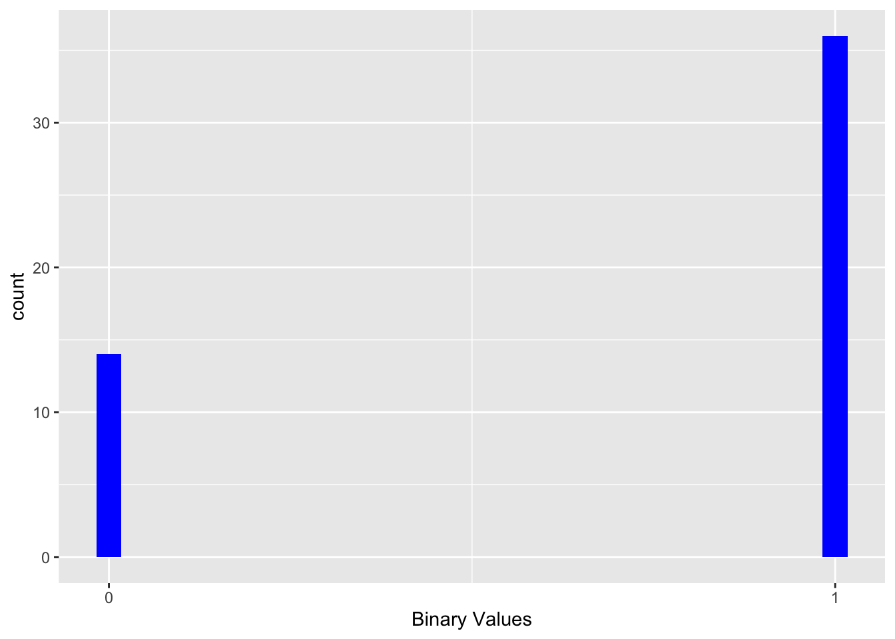

Chapter 14 Boxplots
## [conflicted] Removing existing preference.
## [conflicted] Will prefer lubridate::minute over any other package.14.1 Boxplot with geom_boxplot
For data that does not have a normal distribution, a box plot is typically used to visualize the distribution of the data. The box plot distributes the data based on the range of size order or numerical value. First, the data is ordered from smallest to largest. The values in the corresponding graph represent the 25th, 50th, and 75th quartiles. The whiskers (the lines extending from the boxes) represent 1.5 times the interquartile range (IQR), or the distance between the first quartile (25th) and the third quartile (75). Data that is outside that range is represented by dots. Charts that use notches, or notch, calculate them according to the following formula: (1.58 x IQR) / (square root of the sample). We will again use data from the Dipodium orchid in the following examples, particularly representing the number of flowers and the number of fruits.
A basic boxplot is shown in the first graph below, Fig. 1 (top left). Note that the variable in the first x has a value of 1, which means there is only one group. In the second graph, Fig. 2 (top right), it is modified with the notch option. In the third graph, Figure Fig. 3 (bottom left), the color of the box, the shape or shape of the outliers**, and their size were changed. In the first three graphs, all the data are used in the same box plot. In the fourth graph, Fig. 4 (bottom right), we observe the distribution of the number of flowers by the number of fruits observed per plant. Note that for this last case in particular, there is more than one group.
The notches
The notches on the sides of a boxplot can be interpreted as a comparison interval around the median values. The notch height is the median \(+/- 1.57 x IQR/sqrt(n)\) where IQR is the interquartile range defined by the 25th and 75th percentiles and n is the number of data points
14.2 Teoretical boxplot
Below are two theoretical boxplot, the first one is a normal boxplot and the second one is a boxplot with outliers below and above the range. While the second figure shows a boxplot with outliers, the first figure shows a typical boxplot. The data used in the first figure is a tibble with 1, 8, 9, 10, 100 to 120, 125 to 135, 150 to 160, and 200. The second figure uses the same data as the first figure, but with the addition of 800 and 1000.
## Warning: `as.tibble()` was deprecated in tibble 2.0.0.
## ℹ Please use `as_tibble()` instead.
## ℹ The signature and semantics have changed, see `?as_tibble`.
## This warning is displayed once every 8 hours.
## Call `lifecycle::last_lifecycle_warnings()` to see where this warning was generated.
## # A tibble: 49 × 1
## value
## <dbl>
## 1 1
## 2 8
## 3 9
## 4 10
## 5 100
## 6 101
## 7 102
## 8 103
## 9 104
## 10 105
## # ℹ 39 more rows
Here we show a boxplot for the number of fruits per plant
#names(dipodium)
library(conflicted)
library(janitor)
library(gt)
dipodium=clean_names(dipodium)
gt(head(dipodium))| tree_number | tree_species | dbh | plant_number | ramet_number | distance | orientation | number_of_flowers | height_inflo | herbivory | row_position_nf | number_flowers_position | number_of_fruits | perc_fr_set | pardalinum_or_roseum | fruit_position_effect | frutos_si_o_no | p_or_r_infl_lenght | num_of_fruits | species_name | cardinal_orientation |
|---|---|---|---|---|---|---|---|---|---|---|---|---|---|---|---|---|---|---|---|---|
| 1 | E.o | 75 | 1 | 1 | 2.47 | 40 | 11 | 35 | n | 1 | 24 | 0 | 0.00 | r | 1 | 0 | r | 0 | r | 1 |
| 1 | E.o | 76 | 2 | 1 | 1.97 | 50 | 19 | 47 | n | 2 | 23 | 0 | 0.00 | r | 2 | 0 | r | 0 | r | 2 |
| 2 | E.o | 76 | 3 | 1 | 1.95 | 350 | 18 | 63 | n | 3 | 25 | 1 | 0.04 | r | 3 | 0 | r | 1 | r | 8 |
| 3 | E.o | 58 | 4 | 1 | 3.24 | 210 | 24 | 47 | n | 4 | 20 | 5 | 0.25 | r | 4 | 0 | r | 5 | r | 5 |
| 4 | E.o | NA | 5 | 1 | 0.85 | 80 | 25 | 61 | n | 5 | 13 | 0 | 0.00 | r | 5 | 0 | r | 0 | r | 2 |
| 5 | E.o | 59 | 6 | 1 | 2.62 | 160 | 17 | 35 | n | 6 | 25 | 2 | 0.08 | p | 6 | 0 | r | 2 | p | 4 |
boxplot1 <- ggplot(d1, aes(number_of_fruits, x=1))+
geom_boxplot()+
annotate("text", x= 1,y= 5, label="Fig. 1")+
labs(x="", y="Cantidad de Frutos")+
theme(axis.title=element_text(size=10,face="bold"))boxplot2 <- ggplot(d1, aes(number_of_fruits, x=1))+
geom_boxplot(notch=TRUE) +
annotate("text", x= 0.7,y= 7, label="Fig. 2")+
labs(x="", y="Cantidad de Frutos")+
theme(axis.title=element_text(size=10,face="bold"))boxplot3 <- ggplot(d1, aes(number_of_fruits, x=1))+
geom_boxplot(notch=TRUE,colour="blue",
fill="orange", alpha=0.7, outlier.shape=18,
outlier.color="red", outlier.size=3)+
annotate("text", x= 0.7,y= 7, label="Fig. 3")+
labs(x="", y="Cantidad de Frutos")+
theme(axis.title=element_text(size=10,face="bold"))boxplot4 <- ggplot(d1, aes(factor(number_of_flowers), number_of_fruits))+
geom_boxplot(notch=FALSE)+
annotate("text", x= 2,y= 10, label="Fig. 4")+
labs(y="Cantidad de Frutos", x="Cantidad de Flores")+
theme(axis.title=element_text(size=10,face="bold"))+
theme(axis.text.x = element_text(angle = 90))
14.2.1 Change the width of the boxes
Change the width of the boxes with varwidth. This produces a standard boxplot and defaults to FALSE; if TRUE, produces a plot where the width on the X axis is proportional to the square root of the number of observations in the groups.
dipodium %>%
dplyr::select(number_of_flowers, number_of_fruits) %>%
drop_na() %>%
ggplot(aes(factor(number_of_flowers), number_of_fruits,
fill=factor(number_of_flowers)))+
geom_boxplot(varwidth=TRUE)+
theme(legend.position = "none")+
xlab("Cantidad de Flores")+
ylab("Cantidad de Frutos")
# la función varwidth =TRUE cambia
#el ancho de la barras basado en una formula indicado abajo.
# Más datos más ancho la barra. - Prepare a box plot or also called Box and whiskers. Uses the ElphickBirdData data in the ggversa package. It uses the AQBIRDS column, which is the number of aquatic birds sampled by Zuur, Ieno and Elphick. The bird species named = Godwit is a migratory bird that eats small mollusks on the beaches. Use the “SITE” column to create a box plot with the “notches” for each sampling site.
14.3 geom_boxplot Options and Parameters:
ggplot(the data file, aes(the continuous variable, x=1)): use {x=1} if only one group or the name of the discrete variable if there are multiple groups
geom_boxplot(stat, position, outlier.color, outlier.shape, outlier.size, notch, notchwidth, varwidth)
- stat: statistical transformation of the data; It is only needed if you want to override the default method used by geom_boxplot
- position: to adjust the overlap of the data
- outlier.color: defines the color of outliers
- outlier.shape: defines the shape of the outliers
- outlier.size: defines the size of the outliers
- notch: to produce the notches; is defined with the values TRUE or FALSE
- notchwidth: defines the width of the notches relative to the case (default is 0.5)
- varwidth: produces a standard boxplot and defaults to FALSE; if TRUE, produces a plot where the width on the X axis is proportional to the square root of the number of observations in the groups.
14.4 Violin diagram with geom_violin
The violin plot is similar to the box plot, but the box is curved to give an appreciation of the density of the data. If the data distribution follows a normal curve, it will appear as a vertically oriented bell curve. For the examples below, we will use data from the Australian terrestrial orchid Caladenia valida.
The basic model of the violin plot is shown in Figure. Note that, as with geom_boxplot, if you have only one group, you have to include x=1. What one observes is that most of the information is found close to the value 5 and 10
library(ggplot2)
CalVal=caladeniavalida
violinplot1 <- ggplot(CalVal, aes(DCL, x=1))
violinplot1 +
geom_violin()+
annotate("text", x= 0.75,y= 19, size=8,
label="", na.rm=TRUE)+
theme(axis.title=element_text(size=10,face="bold"))+
ylab("EL largo del apendizaje dorsal")14.4.1 Geom_violin with multiple groups
Next we are going to produce the violin graph by different factors or groups according to the year, while adding blue color to the violins and changing the intensity of the color with alpha=().
violinplot2 <- ggplot(CalVal, aes(y=LCL, x=factor(Year)))
violinplot2 +
geom_violin(fill="blue", alpha=0.5)+
annotate("text", x=2,y= 19, size=8,
label="", na.rm=TRUE)+
labs(x="Año", y="LCL")+
theme(axis.title=element_text(size=10,face="bold"))+
ylab("EL largo del apendizaje lateral")The violin plot with normal distribution
## normal_data
## 1 -2.6955453
## 2 0.8063243
## 3 -1.6377847
## 4 -1.9818676
## 5 -1.9833216
## 6 -2.7652374library(ggplot2)
ggplot(dfnorm,aes(normal_data, x=1))+
geom_violin()+
geom_boxplot()+
geom_jitter(position = position_jitter(width = .1))
14.4.2 Geom_violin used with geom_point and geom_jitter
Data can be added to the previous graph to better visualize the distribution. Plant height data OH were collected discretely in 5 cm units, so all similar values will appear overlapping one another. Due to this particular situation of that type of data, adding points to visualize them with the geom_point function does not really help much to understand its distribution. This is because you cannot appreciate the amount of data used to build the violins. On the other hand, one can use geom_jitter and have a better appreciation of its distribution.
It is important to take into consideration that if geom_point is added before geom_violin, the points could be hidden behind the violin.
violingp=violinplot3a <- ggplot(CalVal, aes(y=OH, x=factor(Year)))+
geom_violin()+
geom_point()+ # Note que los puntos serán sobrepuestos sobre el violín
annotate("text", x=2,y= 20, size=8,
label="", na.rm=TRUE)+
labs(x="Año", y="OH")+
theme(axis.title=element_text(size=10,face="bold"))
violingv=violinplot3a +
geom_violin()+
geom_jitter(position = position_jitter(width = .1))+ # Note que los puntos serán sobrepuestos sobre el violín pero no solapan uno encima del otro.
annotate("text", x=2,y= 20, size=8,
label="", na.rm=TRUE)+
labs(x="Año", y="OH")+
theme(axis.title=element_text(size=10,face="bold"))+
xlab("Overall height, mm")
grid.arrange(violingp, violingv, ncol=2)## Warning: Removed 1 row containing non-finite outside the scale range
## (`stat_ydensity()`).## Warning: Removed 1 row containing missing values or values outside the scale
## range (`geom_point()`).## Warning: Removed 1 row containing non-finite outside the scale range (`stat_ydensity()`).
## Removed 1 row containing non-finite outside the scale range (`stat_ydensity()`).## Warning: Removed 1 row containing missing values or values outside the scale range (`geom_point()`).
## Removed 1 row containing missing values or values outside the scale range (`geom_point()`).14.4.3 geom_jitter and geom overlap
In the next graph, geom_jitter was called before geom_violin, but at the same time the color intensity was changed so that the points are better visible. We see that some of the points that were half hidden before and those that do not overlap the violin are better revealed.
violinplot3 <- ggplot(CalVal, aes(y=OH, x=factor(Year)))
violinplot3 +
geom_jitter(position = position_jitter(width = .2), colour="red")+
geom_violin(fill="yellow", colour="blue", alpha=0.3)+
annotate("text", x=2,y= 20, size=8,
label="")+
labs(x="Año", y="OH")+
theme(axis.title=element_text(size=10,face="bold"))## Warning: Removed 1 row containing non-finite outside the scale range
## (`stat_ydensity()`).## Warning: Removed 1 row containing missing values or values outside the scale
## range (`geom_point()`).14.4.4 Quartiles and geom_violin
The 25th quartile, median (50th), and 75th quartile are now displayed on the same violin plot with horizontal lines.
violinplot3 <- ggplot(CalVal, aes(y=OH, x=factor(Year)))
violinplot3 +
geom_violin(draw_quantiles = c(0.025, 0.25,0.5, 0.75,0.975))+
annotate("text", x=2,y= 20, size=8,
label="")+
labs(x="Año", y="OH")+
theme(axis.title=element_text(size=10,face="bold"))## Warning: Removed 1 row containing non-finite outside the scale range
## (`stat_ydensity()`).14.4.5 Adding color to the outline of the violin
In this figure, color is added to the outline of the violins and the quartile lines.
## [1] "Population" "Year" "Plant_num" "OH" "OD"
## [6] "OW" "DSL" "DCL" "LSL" "LCL"
## [11] "LSW" "PL" "LL" "LW" "Fruit_not"violinplot3 <- ggplot(CalVal, aes(y=OH, x=Population))
violinplot3 +
geom_violin(colour="red", alpha=.2, draw_quantiles = c(0.25, 0.5, 0.75))+
annotate("text", x=2,y= 20, size=8,
label="")+
labs(x="Año", y="OH")+
theme(axis.title=element_text(size=10,face="bold"))## Warning: Removed 1 row containing non-finite outside the scale range
## (`stat_ydensity()`).14.4.6 geom_violin by category or factor
In the Figure, the color of each group is changed, Year. To achieve this effect, another variable is added to represent the groups (or categories) by color; in this case, the distribution of plant sizes in terms of whether they produced fruit or not.
violinplot3 <- ggplot(na.omit(CalVal), aes(y=OH, x=factor(Year)))
violinplot3 +
geom_violin(aes(fill=(factor(Fruit_not))),
draw_quantiles = c(0.25, 0.5, 0.75))+
annotate("text", x=2,y= 20, size=8,
label="")+
labs(x="Año", y="OH")+
theme(axis.title=element_text(size=10,face="bold"))+
ylab("Altura de la planta")14.4.7 Geom_violin in proportion to sample size
In Figure, the same graph is modified to take into account the sample size using the scale option with the count parameter. In other words, the violins will be modified to include the sample size; that is, the maximum width scale is proportional to the size of the sample. So, in this case we see the year where there was the largest (2007) and smallest (2008) sample size according to the width shown for each violin.
violinplot3 <- ggplot(CalVal, aes(y=OH, x=factor(Year)))
violinplot3 +
geom_violin(scale = "count",
draw_quantiles = c(0.25, 0.5, 0.75))+
labs(x="Año", y="OH")+
theme(axis.title=element_text(size=10,face="bold"))## Warning: Removed 1 row containing non-finite outside the scale range
## (`stat_ydensity()`).14.5 geom_violin not in proportion to sample size
In the Figure the width of the violin is modified to 1 on the scale of the X axis. In other words, in this case the width width of the violin for the first year goes from 2003.5 to 2004.5, for the second violin from 2004.5 to 2005.5 and so on consecutively for the other years. This approach creates a degree of uniformity for each width. In this case the width is not related to the sample size like the previous example.
violinplot3 <- ggplot(CalVal, aes(y=OH, x=factor(Year)))
violinplot3 +
geom_violin(scale = "width",
draw_quantiles = c(0.25, 0.5, 0.75))+
labs(x="Año", y="OH")+
theme(axis.title=element_text(size=10,face="bold"))## Warning: Removed 1 row containing non-finite outside the scale range
## (`stat_ydensity()`).14.6 geom_violin and orientation change
In the Figure we change the orientation of the previous graphs using the coord_flip() option.
violinplot3 <- ggplot(CalVal, aes(y=OH, x=factor(Year)))
violinplot3 +
geom_violin()+
coord_flip()+
labs(x="Año")+
theme(axis.title=element_text(size=10,face="bold"))+
ylab("Altura de la planta")## Warning: Removed 1 row containing non-finite outside the scale range
## (`stat_ydensity()`).Density graphs with colors for the different quantiles
dt <- data.table::data.table(x=c(1:200),y=rnorm(200)) # Crear un distribucion de 200 datos al azar con una distribución normal
dens <- density(dt$y) # calcular la densidad
df <- data.frame(x=dens$x, y=dens$y) # crear un data frame de la densidad
probs <- c(0.1, 0.25, 0.5, 0.75, 0.9) # determinar cual cuantil quiere evaluar
quantiles <- quantile(dt$y, prob=probs) # asignar cada valor a uno de los cuantiles
df$quant <- factor(findInterval(df$x,quantiles)) # Asignar los cuantiles a factores
ggplot(df, aes(x,y)) + geom_line() +
geom_ribbon(aes(ymin=0, ymax=y, fill=quant)) +
scale_x_continuous(breaks=quantiles) +
scale_fill_brewer(guide="none")
CalVal2=
CalVal %>% dplyr::select(OH) %>%
drop_na() # Seleccionar lo datos deseados removiendo los "NA"
dens2=density(CalVal2$OH)
dens2##
## Call:
## density.default(x = CalVal2$OH)
##
## Data: CalVal2$OH (163 obs.); Bandwidth 'bw' = 2.94
##
## x y
## Min. :16.18 Min. :9.320e-06
## 1st Qu.:34.34 1st Qu.:8.159e-04
## Median :52.50 Median :5.032e-03
## Mean :52.50 Mean :1.374e-02
## 3rd Qu.:70.66 3rd Qu.:2.621e-02
## Max. :88.82 Max. :5.660e-02## x y
## 1 16.17920 9.561940e-06
## 2 16.32136 1.105205e-05
## 3 16.46352 1.272153e-05
## 4 16.60567 1.469481e-05
## 5 16.74783 1.691094e-05
## 6 16.88998 1.938565e-05probs <- c(0.01, 0.1, 0.25, 0.5, 0.75, 0.9, 0.95, .99)
quantiles <- quantile(CalVal2$OH, prob=probs)
df2 <- data.frame(x=dens2$x, y=dens2$y)
df2$quant <- factor(findInterval(df2$x,quantiles))
head(df2)## x y quant
## 1 16.17920 9.561940e-06 0
## 2 16.32136 1.105205e-05 0
## 3 16.46352 1.272153e-05 0
## 4 16.60567 1.469481e-05 0
## 5 16.74783 1.691094e-05 0
## 6 16.88998 1.938565e-05 0ggplot(df2, aes(x,y)) +
geom_ribbon(aes(ymin=0, ymax=y, fill=quant)) +
scale_x_continuous(breaks=quantiles) +
scale_fill_brewer(palette = "Set1",guide="none")+ # colores horribles
theme(axis.text.x = element_text(angle = 45))
- Prepare a violin chart. Uses the CypripediumA data in the ggversa package. Use the column Lip_length_mm, which is the lip length of the orchid Cypripedium acaule. The orchid species lives in northern Canada in forests (Forest) or swamps (Wetlands). Use the Forest_Wetland column to create a fiddle box for each sampling site. Color the two groups. Evaluating the distribution of the data on labellum size, do you believe that the size distribution is equal?
14.7 geom_violin Options and Parameters:
- ggplot(the data file, aes(the continuous variable, x=1)): {x=1} if a group or the name of the discrete variable if there are multiple groups
geom_violin(x, y, alpha, color, fill, linetype, size, weight)
alpha: the intensity of the color
color: the color of the line around the violin
fill: the color used to fill the violin
linetype: represents the line style; see section
size: represents the thickness of the line
scale: the scale used to produce the violin taking into account the sample size proportionally; uses count or width parameters
weight: to modify the original value; then it would not be, for example, the count/sum of the values but a weighted value (weighted average).